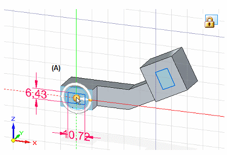
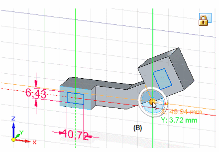
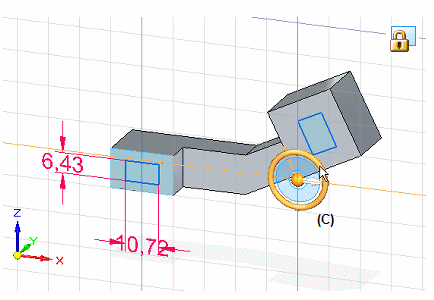
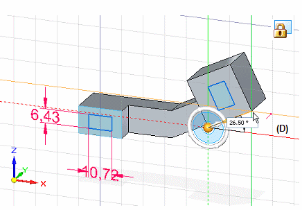

Set sketch plane horizontal and vertical for dimensioning
You can use the Reposition Origin command to move and realign the sketch plane origin, so your dimension text maintains the correct horizontal and vertical orientation with respect to sketch geometry. This is helpful when you are dimensioning existing 2D geometry at different coplanar angles.
The following examples show synchronous sketches on the model.
In a synchronous sketch, the plane lock icon must be displayed in the graphics window before you can use the Reposition Origin command. To learn how, see Lock and unlock a sketch plane.
-
Choose the Reposition Origin command
 .
. -
Move the origin point by doing all of the following:
-
Click the origin of the steering wheel (A).

-
Click a new location for the origin point (B).

The origin X and Y intersecting lines are moved to the new location.
-
-
Align the horizontal and vertical axes of the origin with the sketch geometry by doing all of the following:
-
Click the torus of the steering wheel (C).

-
Click a keypoint to define the alignment of the sketch plane X-axis to (D).

-
-
Select a 2D dimension command on the Sketching tab, such as Smart Dimension, to add dimensions that are horizontal and vertical to the sketch geometry on the current sketch plane.

-
Another way to move the steering wheel is to hold the left mouse button as you drag it anywhere along an edge or sketch geometry.